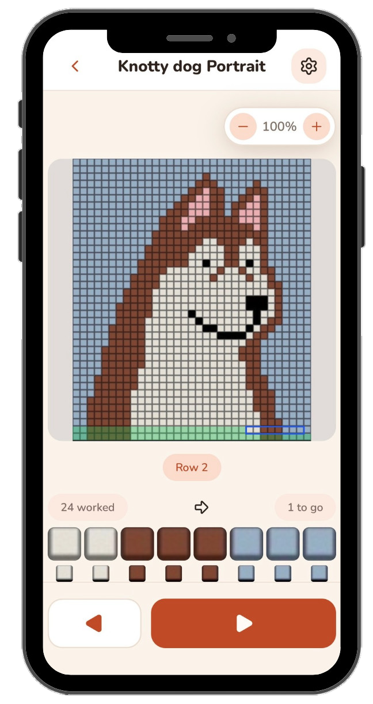
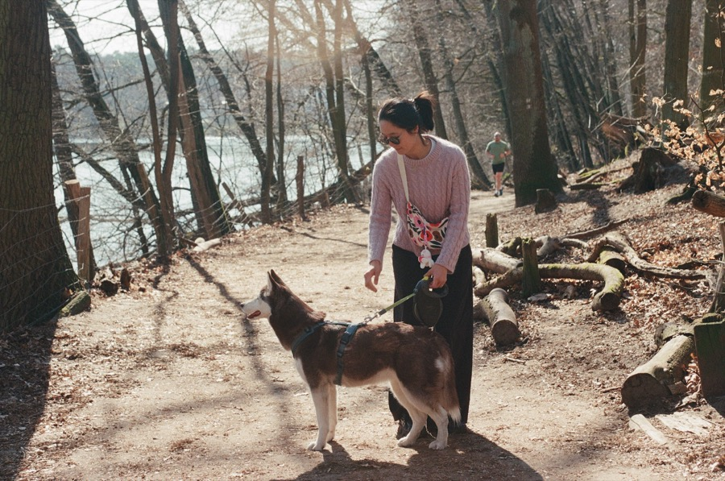

Never lose your place in a chart again.
Knotty turns a photo of any knitting or crochet chart into a focused, position-aware guide — so you always know exactly which stitch comes next.
No sticky notes, no ruler, no losing your row to one glance away.
Works with colorwork, lace, cables, and filet crochet — Knotty never has to guess what's in a cell.

How it works
Import your chart
Bring in a photo of any knitting or filet crochet chart from your library. No camera, no account, nothing uploaded.
Calibrate once
Align a grid over the photo — set the bounds and cell size, verify against a numbered overlay, and it's ready to knit from.
Knit stitch by stitch
Follow the moving Active Window across every row. Flat or in the round, Knotty tracks your place for you.
Built for how you actually knit
Flat or in the round — automatically
Tell Knotty how your piece is constructed once. It flips the reading direction for you, every row, no mental math required.
Skip the stitches that aren't there
Paint over decreases, gussets, and jagged edges as inactive. The window skips them so your row count stays honest through irregular shapes.
Check yourself without losing your place
A hint from the row you just worked sits right alongside the current one, so you catch a mistake before it compounds.
One project, every chart region
Jump between a gusset and a main chart — or any multi-part project — with each region's progress tracked on its own.

Who built this
Hi, I'm a mobile app developer with a love for knitting. Knotty began while I was working on my first colorwork project — the Songbird mittens — where I kept losing my place in the chart and making mistakes. So I built the tool I wished existed.
I'm an indie developer working on this alone — no office, no corporation, no team. Knotty is a passion project, built in my spare time to solve a problem I know a lot of other crafters run into.
My dog, Nessa, is my sounding board when I'm stuck on a problem — a very patient listener, if not much of a problem-solver. She's also Knotty's built-in tutorial: the dog portrait chart you can practice on when you first open the app is her. Watch how she became a portrait →
My pledge to you, crafter to crafter
Common FAQs
No. Knotty doesn't use AI or image recognition to read your chart — it relies on plain image manipulation, cropping and displaying the exact stitches from the photo you calibrated. Nothing is interpreted or generated; what you see on screen is always a real piece of your own chart.
If you've previously purchased Knotty's premium features and they aren't showing up (for example, after reinstalling or switching devices), open Settings in the app, tap Unlock, and then tap Restore Purchases while signed in to the same App Store / Google Play account you originally purchased with. If the purchase still doesn't appear, email me at knottyapp@gmail.com with your store receipt and I'll sort it out.
Your projects, chart photos, calibration data, and progress are stored locally on your device — Knotty has no account system and no cloud backup. Deleting the app from your device deletes all of that data.
The only data that leaves your device is: what's needed to process and restore in-app purchases, handled by my payment provider; optional crash reports and usage analytics, which are off by default and send nothing unless you turn them on in Settings → General; and any message you choose to send from Settings → Send feedback. None of it includes your projects, chart photos, or notes. See the Privacy Policy for the detail on each.
To request deletion of any data that has been transmitted, email knottyapp@gmail.com and I will process your request within the timeframes required by law.
Open Settings → Send feedback in the app and write me a message. It's sent anonymously and includes your app version and device model so I can reproduce the problem — no name, no email, nothing you've made.
Because it's anonymous, I can't write back. If you'd like an answer, email knottyapp@gmail.com instead (there's a link on the same screen).
Legal
Support & contact
I aim to respond to support requests within a few business days.